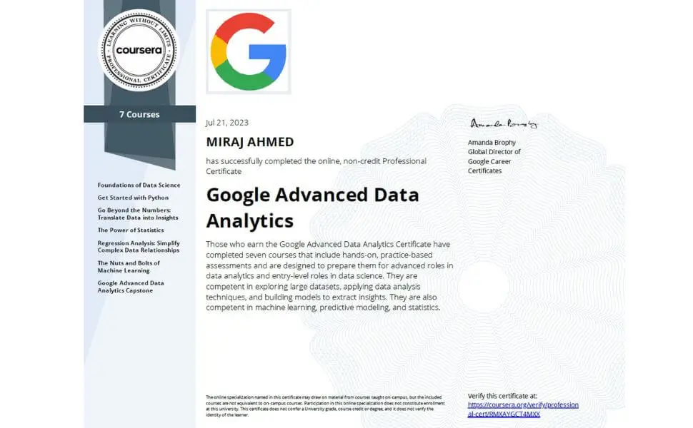

Employee Attrition Prediction
Project Information
- Category: Machine Learning / HR Analytics
- Program: Google Advanced Data Analytics
- Tech Stack: Python, XGBoost, Scikit-Learn
- Key Result: 98.5% Accuracy (Random Forest)
- Notebook: View on Kaggle
Predicting Factors Behind Employee Attrition
Using Logistic Regression, Random Forest, and XGBoost
This is the capstone project from the Google Advanced Data Analytics Professional Program on Coursera.

Interactive Notebook Preview
Introduction
In today's fiercely competitive job market, employee attrition poses a significant challenge for organizations. High turnover rates disrupt productivity, strain resources, and impact overall business performance. To tackle this issue, I embarked on a data-driven journey to uncover the factors behind employee attrition and identify potential solutions.
Goal & Objective
The goal of this project is to analyze employee turnover and identify the key factors influencing attrition. We analyzed a comprehensive HR dataset to build predictive models, gaining insights into why employees leave and providing actionable recommendations to boost retention.
Approach
Our dataset included attributes such as satisfaction level, last evaluation, tenure, salary, and department.
- EDA: Identified trends, cleaned duplicates, and encoded categorical variables.
- Modeling: Applied Logistic Regression, Random Forest, and XGBoost.
- Optimization: Tuned hyperparameters using GridSearchCV.
Model Evaluation
We evaluated models based on accuracy, precision, recall, F1-score, and AUC-ROC. The Random Forest model performed best.
| Model | Accuracy | Precision | Recall | F1-score | AUC-ROC |
|---|---|---|---|---|---|
| Logistic Regression | 82.51% | 46.69% | 26.19% | 33.56% | 88.13% |
| Random Forest | 98.50% | 98.05% | 92.80% | 95.35% | 98.06% |
Key Findings
- Low satisfaction levels and low tenure were strongly associated with higher attrition rates.
- Lack of promotions was linked to increased attrition.
- Salary levels were crucial; employees in lower salary brackets were more likely to leave.
- Sales and technical departments experienced higher attrition than others.
Recommendations
- Conduct regular employee satisfaction surveys to identify and address areas of improvement.
- Implement talent development programs to offer career advancement opportunities.
- Review and adjust salary scales to ensure competitiveness.
- Provide support for work-life balance to reduce burnout.